Data accuracyCompleteness, overrides and declared gaps, counted per survey.
← All work
Climate Tech · Field Operations · Service Design
Enter
Germany pays up to 70% towards a home retrofit, but only with an official renovation plan, and that plan is built from a survey of the house. Enter sent tradespeople to do the surveying. I designed the tool that made their data good enough to build on.

iSFP
Official government document
generated from field data
generated from field data
9 in 10
Houses with a dimensioned floor plan
before anyone knocked
before anyone knocked
1 visit
Survey, findings and next steps,
before anyone leaves the house
before anyone leaves the house
The context
Billions in renovation funding.
The data to claim it
didn’t yet exist.
The barrier is paperwork. Insulation, a heat pump, new windows: whatever the measure, a homeowner needs an iSFP first, an Individual Renovation Roadmap drawn up from a survey of their building. Traditionally a certified energy consultant does that survey in person, which is slow, expensive, and most of the reason a house never gets one.
Enter split the job. Somebody goes to the house and captures it; the energy model and the certified document are made from that data afterwards. Which only works if what comes back is good enough to build on, and the person who went is usually a Handwerker: a tradesperson who has spent their working life inside buildings, and has never opened a modelling tool.
Understanding the work
Two hours in the house.
A week to the answer.
I rode along on assessments, meter cupboard to loft, then followed the data backwards: to the desk where somebody rekeyed it into the energy model, and onto the call where a colleague finally presented the result. Three stages, two handovers, and data leaked at both.
Stage 01 · The visit
2 hrs
Measuring, sketching, writing. Everything that matters ends up on one handwritten sheet.
Stage 02 · The desk
8 hrs
Somebody else rekeys that sheet into the model, then chases whoever wrote it for what is missing or unreadable.
Stage 03 · The presentation
1 week
A colleague who has never seen the house presents the iSFP findings on a scheduled call. It is also the sales call, and the only real chance to upsell to the customer.

Ride-alongs: following the assessment through the house, room by room

Page three of six: room areas, wall build-up, U-value. All of it rekeyed at a desk later
The business case
Collect the data.
Automate everything after it.
Most of what happened after the visit was work a machine could carry. The energy model, the calculations behind it, the ranked measures, the report the homeowner sees. The certified iSFP still needs a qualified person at the end, but nearly everything feeding it can be imported rather than rebuilt by hand.
The visit was the exception, and it was the part still running on paper. So the shape of the project was settled before a single screen was designed: shrink the human step down to one job, and make what it produces good enough to carry everything after it.
Pain 01 · Data collection
Nothing arrived clean
Paper forms and handwritten notes moving through a workflow whose parts didn’t know about each other. Expensive to collect, hard to share, frequently incomplete. Little reached the desk without a phone call to finish it, and nothing incomplete can be handed to a model.
Pain 02 · The homeowner
The answer came too late
Enter made its money arranging the retrofit work itself, and the quotes for it came attached to the iSFP: days later, from somebody the homeowner had never met. The trust built during the visit had gone cold by then, and conversion suffered for reasons that had nothing to do with the recommendations.
The first attempt
We rebuilt the paper form.
On a screen. It changed nothing.
The cheap move was to build nothing ourselves. We put the survey into Fastfield, an off-the-shelf forms tool, and had it in the field inside a few weeks. It did what it promised. Typed, legible, no more deciphering handwriting at the desk.
It also changed nothing about the job. A window belongs to a floor plan, not to a list of fields, and describing one as form data meant a row of dropdowns for every opening in the house: which floor, which wall, which orientation, what size. Accurate, and miserable. 40 openings into a survey, people were moving fast and rounding things, and that is where the errors came from.
The data wasn’t poor because anyone was careless. It was poor because we had made the accurate answer the slowest one to give.
Rethinking data collection
Paper first.
Then the engineering.
A plan you could work on directly meant cadastral data, a drawing surface, live geometry and validation. Months of engineering, and I didn’t want to spend them finding out the idea underneath didn’t survive a real house.
So I made the cheapest possible version. A dimensioned 2D footprint pulled from cadastral records, dropped into the Files app on the tablet already in the van, marked up with a pencil during real appointments. No code. An afternoon to change.
Two ideas were riding on it, and I trusted them very differently.
The footprint I expected to hold, and it was the expensive thing to build, which made it worth proving first. The second was a gamble: rather than specifying every window, define three or four window types by year, frame and glazing, then tag their positions on the plan by colour. Far less work in the house. No idea whether the modelling team would accept what came back.

One sheet per floor, and one blunt question: does this plan match the floor you’re standing on?

Marked up in the Files app on a tablet they already carried. Nothing was built to run this test
Every sheet went to two audiences: the people working this way in somebody’s attic, and the modelling team building a model from whatever came back. Both were in the room for every round.
The footprint held
Registered geometry was close enough to correct on site rather than measure from scratch. Starting from something beat starting from nothing.
The window types exceeded
The idea I trusted least was the bigger win. Define the type once, mark where it occurs, and the most tedious stretch of the survey nearly disappears.
Completeness didn’t
A field skipped in the house was still a field missing at the desk. Paper can invite completeness. It can’t enforce it, and that was the argument for building something real.
Building data capture
One handwritten sheet
became four sections.
The paper survey ran in one direction. Nobody works a house that way. You go down to the boiler, up to the loft, back through the two rooms you skipped because someone was asleep in them, so the sheet became four tabs you could leave and come back to.
Almost nothing stayed free text. Heat sources, wall build-ups, glazing: preset options, because the person answering knows buildings, not energy modelling. What reached the model was already a value it recognised, and the submit control stayed dead until all four sections were done.
Building in house meant more than a capture screen. Field operations were running appointments, tickets and documents across tools that knew nothing about each other, and none of it hung off the customer it belonged to. So the survey sat on an information architecture with the customer project as the spine: appointment, survey, photos, tickets and the finished iSFP all attached to it. That structure also held the boundaries, starting with a survey that stayed locked until somebody actually began the appointment.
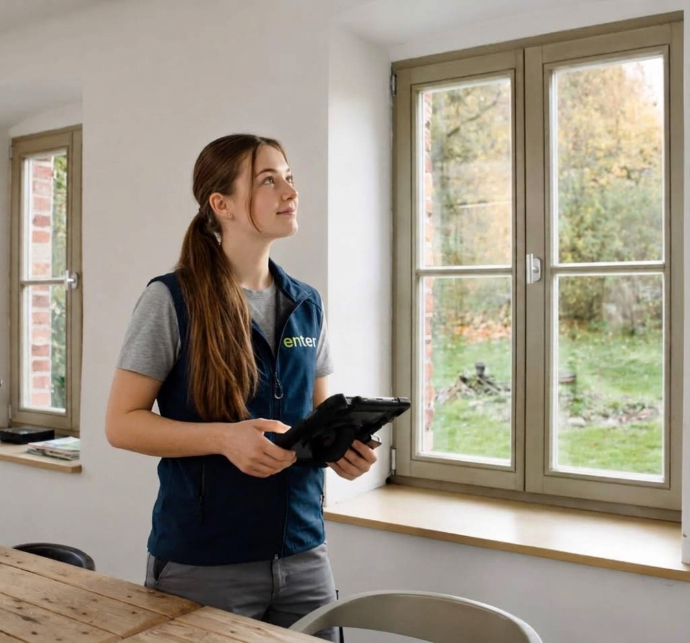
One survey, two devices: the tablet most people worked from, and the phone for when a tablet was one hand too many
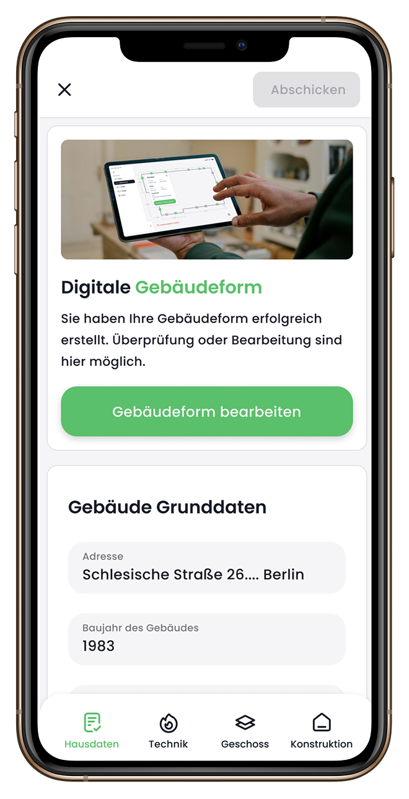
01 · Hausdaten
House data
Address, year built, living area, occupants, and the building form once it exists.
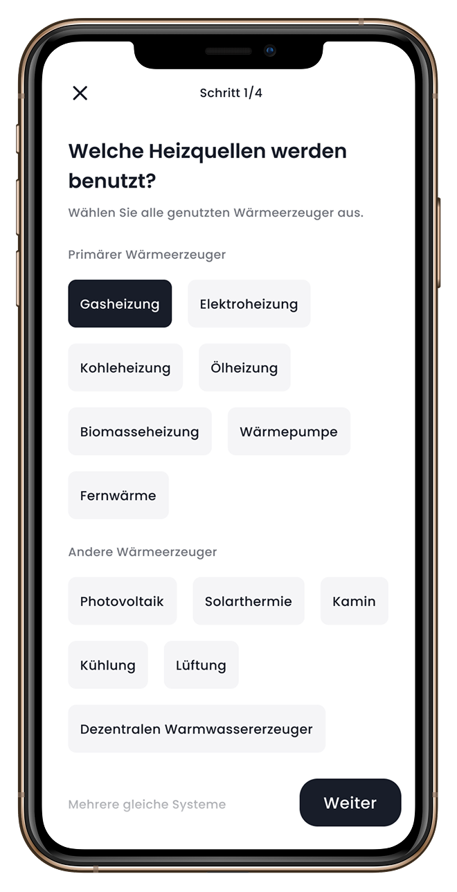
02 · Technik
Systems
Heating, hot water, ventilation, renewables. Picked from the set the model can read.
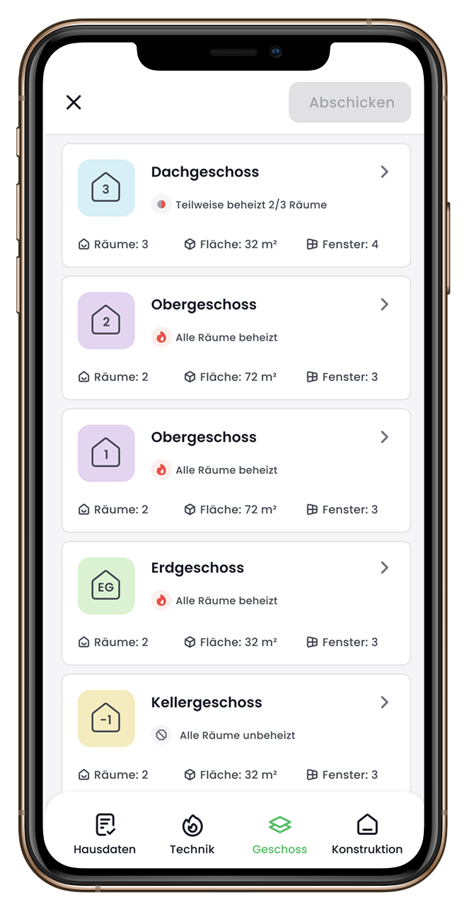
03 · Geschoss
Floors & rooms
Every storey, with whether it’s heated. Heated area is what the model divides by.
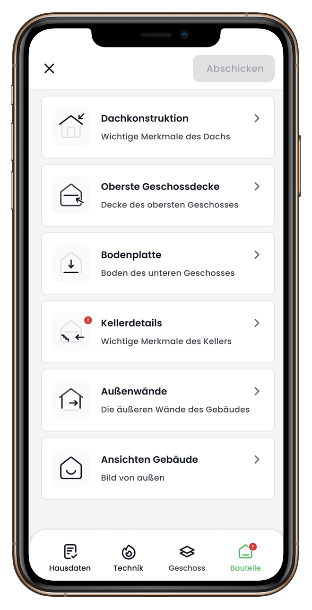
04 · Bauteile
Construction
Roof, ceilings, slab, walls, elevations. The badge counts what is still open.
The floor plan feature
Window-level accuracy.
Built into the
floor plan.
Cadastral data covered
9 houses in 10.
Nobody drew the building. You found it on a map and traced the thermal envelope, the heated volume the model is actually about. An attached garage sits on the same footprint and outside that envelope, and only the person standing there can tell you which is which.
The exceptions were new builds, extensions, anything the registry hadn’t caught up with yet. And a missing plan can’t stop a survey that is already happening.
So the fallback went in after the MVP: six rough shapes, one tap, and a screen that says outright it doesn’t want precision. It carries the last 10% without anyone having to redraw the automation behind the other 90%.
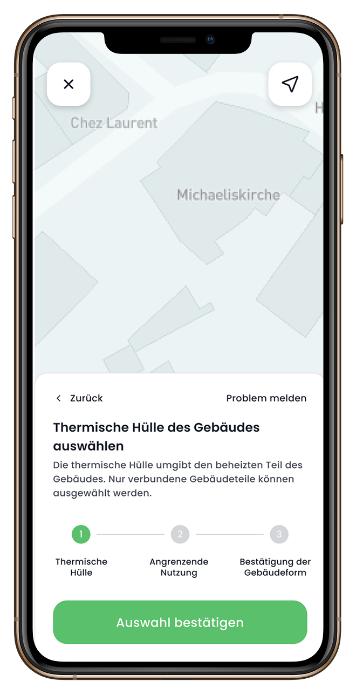
The normal path
Trace it on the map
Only connected parts can be selected, so the envelope stays one volume by construction.
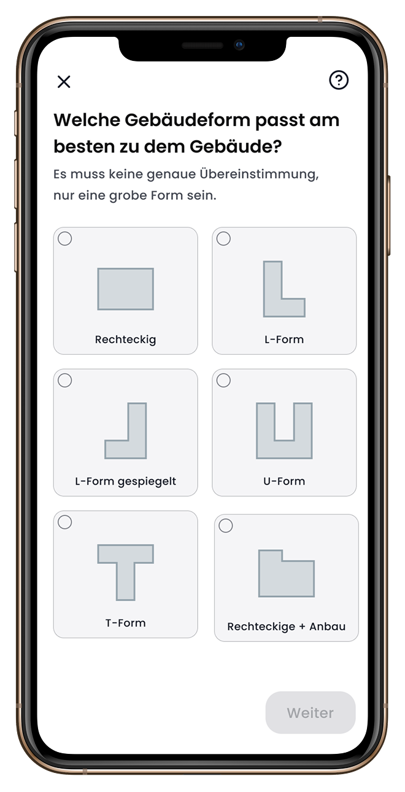
When it fails
Pick a rough shape
Six shapes and a plain instruction not to be precise. The survey keeps moving.
A window stops
being a form.
This is what the paper sheets were testing, built properly. With a plan on screen you drag a window onto the wall it sits in, type its dimensions, and pick one of the three or four types defined at the start of the survey.
Position, size and glazing all feed the U-value of the wall around the opening, and that decides which measures are worth doing. On the plan you can’t put a window on the wrong wall, because the wall is the thing you touched.
Where the registered outline was wrong, the worker flagged it on the plan instead of working around it. Those corrections fed back into the source data for later visits.
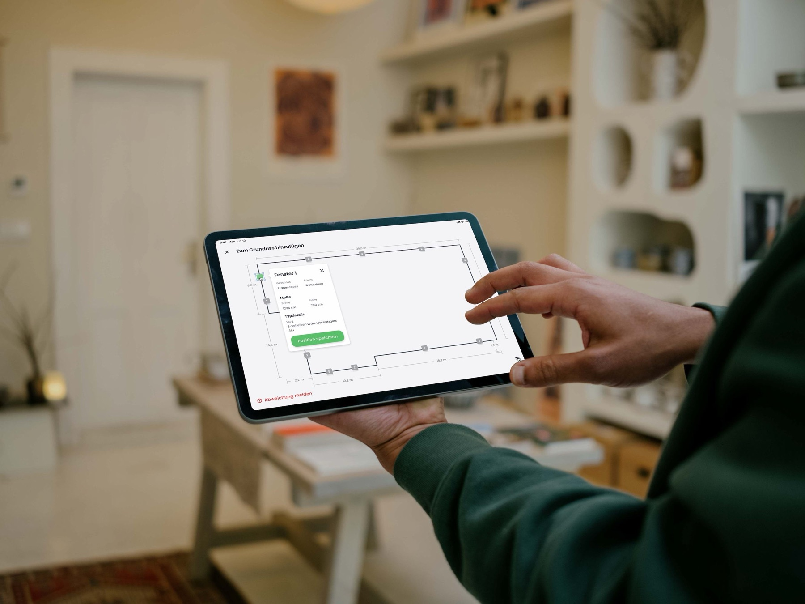
One window, on the wall it sits in: room, dimensions and the type it inherits, in one step
Live calculation
The model calculates.
The person on site
overrules it.
The U-value is how much heat escapes through a square metre of wall, roof or window, and the entire model rests on it. We calculated it live as construction details went in, so the estimate appeared while somebody was still standing in front of the thing it described.
Every figure stayed editable. Somebody looking into an opened-up wall knows more about it than a lookup table does, and the override opened the official U-value table for the times they would rather check than guess. Go more than 25% off the estimate and the app flagged how far out the number was, then took it anyway.
The override earned its place once the tool went outside Enter. It was sold to other companies to run their own surveys, and their people weren’t only tradespeople. Architects and energy consultants used it too, with the training to want a level of detail the preset options deliberately don’t carry.
So the automated estimate is a starting position, not a verdict. Whoever is standing in front of the wall gets the last word on it, and the number that reaches the model is the one they signed off.
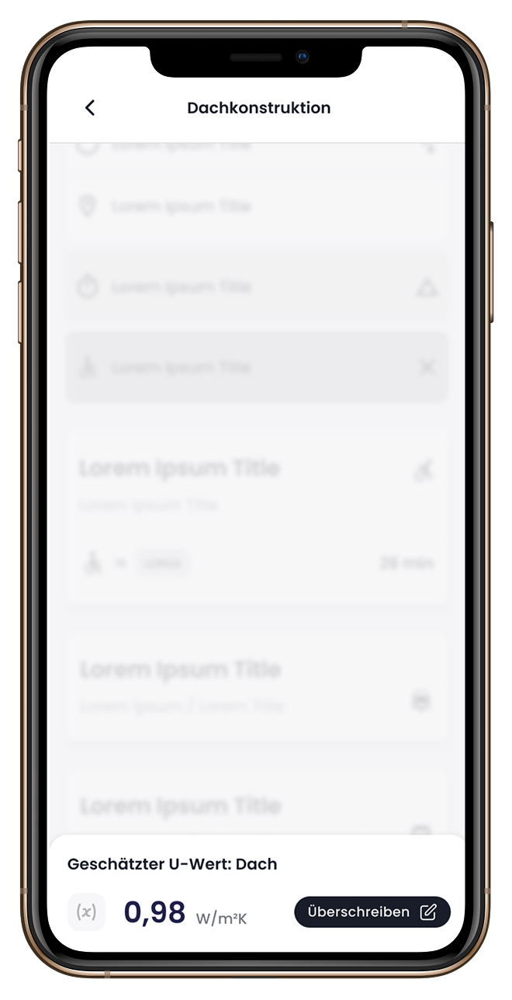
While you work
The running estimate
Pinned to the foot of the screen, moving as details go in, never in the way.
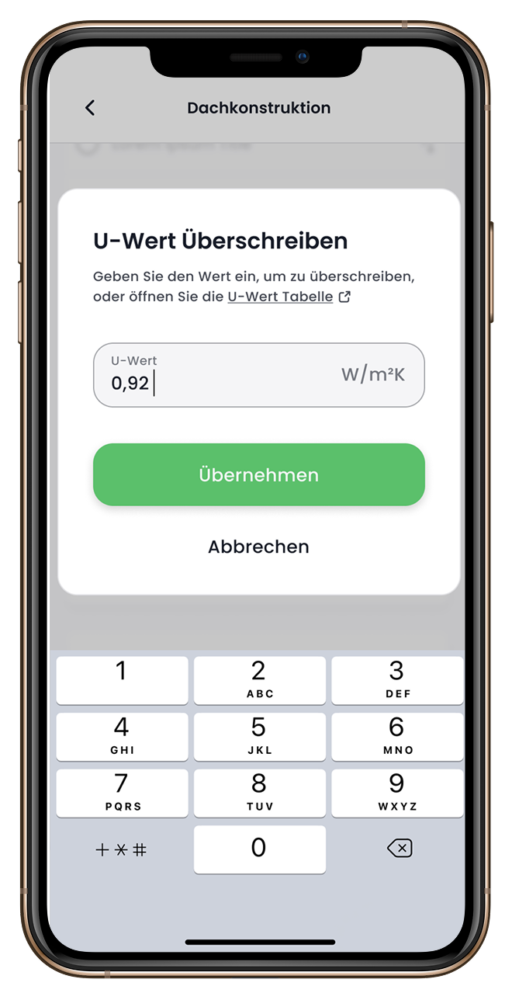
When you disagree
Type the real one
With the official U-value table one link away, for the times you would rather check than guess.
Data completeness
100% or nothing.
Real houses don’t cooperate.
Missing details invalidate both the subsidy and the model, so completion had to be total. Every critical field was mandatory by default and the survey wouldn’t submit around one.
Then you meet the building. The basement is locked and the neighbour has the key. The owner inherited the house and has no idea when the windows went in. The flat roof needs equipment nobody brought.
A requirement you can’t satisfy doesn’t get met, it gets defeated. Somebody types a plausible number and a guess enters the model looking exactly like a measurement.
So the way out was designed rather than left to happen. “Antwort nicht möglich” doesn’t quietly clear the requirement. It asks why, from a fixed list.
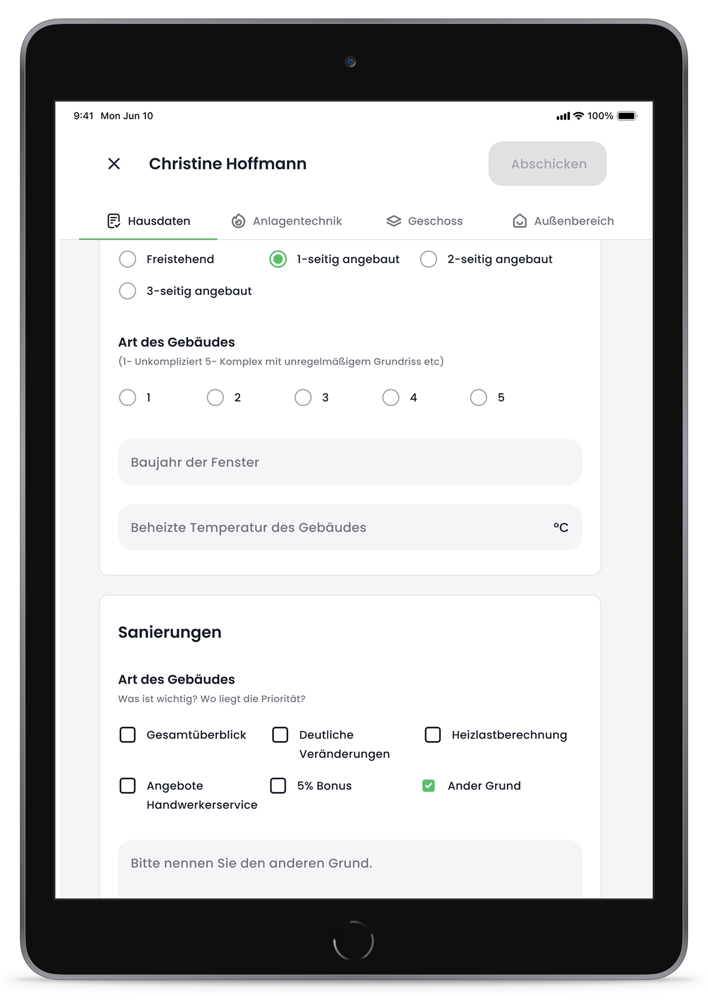
Step 01
Mandatory by default
Critical fields block the submit. Nothing here suggests there’s a way past them.
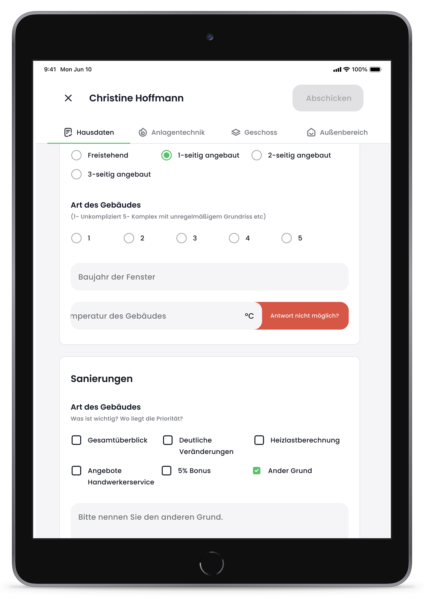
Step 02
Swipe to find the exit
Deliberate enough that nobody reaches “Antwort nicht möglich” by accident, or by habit.
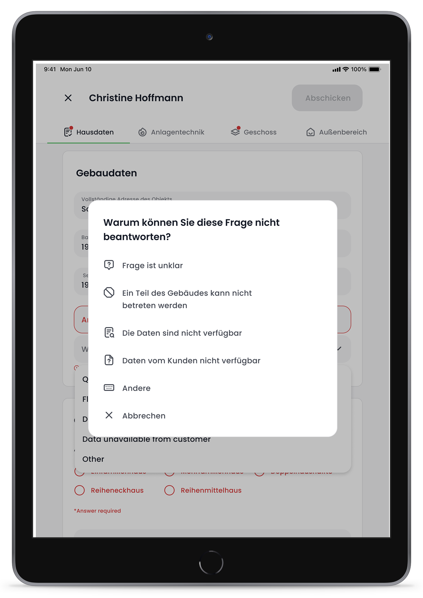
Step 03
Say why
Question unclear. Part of the building inaccessible. Data doesn’t exist. Customer couldn’t supply it. A reason, not a text box.
The homeowner had
the final sign-off.
Nothing went to the model until the person who lives in the building had been through it. Five steps on the tablet, in their own kitchen: the house, the systems, and the figures the result depends on.
Somebody who has lived somewhere for 30 years knows the boiler went in later than the sticker on it claims. And where readings were missing, the screen said what it would cost the answer rather than just marking a field empty.
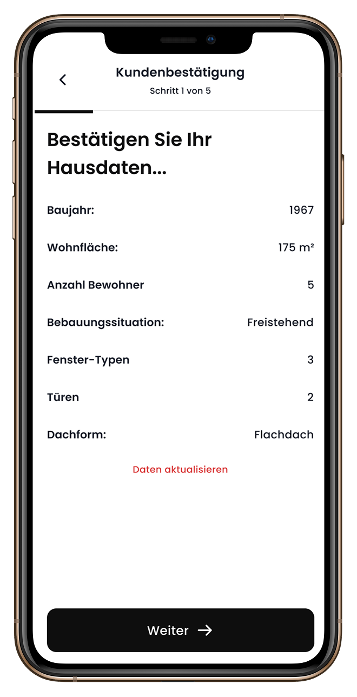
Step 1 of 5
The house
Seven figures the whole model rests on, in front of the person best placed to catch them.
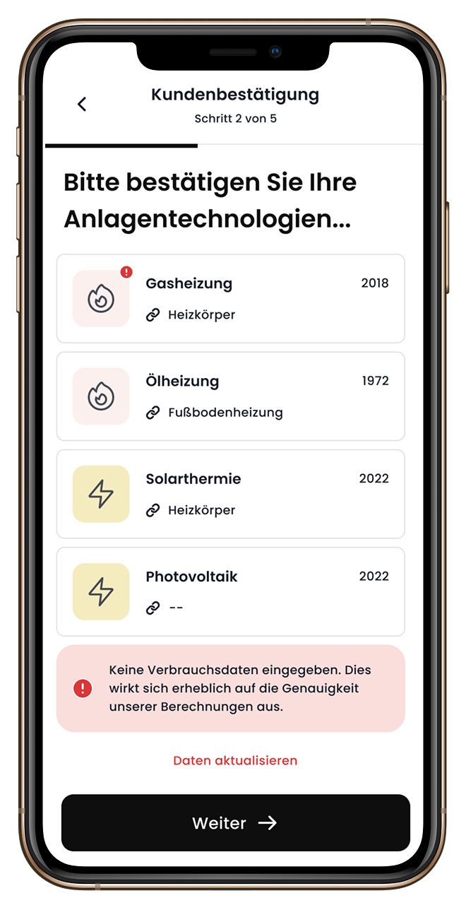
Step 2 of 5
The systems
Missing consumption data, named as a cost to the answer rather than an empty box.
The customer report
Field data becomes
a plan a homeowner
can trust.
The moment the survey was transmitted, the AI came back with a report. Not the iSFP, which still needed a qualified pair of hands, but the findings: where the building stands, what it could reach, what each measure costs and saves. It opened on the same tablet, in the same kitchen, while the person who had just walked the house was still standing in it.
Speed wasn’t really the point. Field workers were already handing out opinions on the doorstep, because homeowners ask and it’s rude not to answer, and none of it was consistent or anything the company could stand behind. This turned that into the same conversation every time, built from the survey they had just finished.
I designed this part from scratch. It had to do the job that phone call used to do, in a kitchen, carried by a tradesperson rather than a salesperson, and end with an agreed set of measures for the iSFP.
The report
- 01 Future outlook Rising energy costs in the years ahead, and the subsidies available.
- 02 Current assessment The property’s energy performance today, and its savings potential.
- 03 Renovation roadmap Measures reviewed and chosen, ranked by saving, cost and suitability.
- 04 Your next steps When the iSFP arrives, and the quote comparison service that follows.

01 · Future outlook
The cost of doing nothing
It opened on energy prices, not renovation costs. Projected gas, oil and electricity out to 2064, against what this household already spent each year. The baseline for everything after it was the cost of standing still.

02 · Current assessment
Where the building stands today
Year built, floor area, heat source, consumption, taken from the survey finished minutes earlier in the same house. Beside it, today’s energy class and the one the building could reach. People recognised their own house here, which is what made the rest credible.

03 · Renovation roadmap
Every measure, ranked
The full set of recommendations in one table: annual saving, payback, cost, a rating. Ticking a measure moved the totals along the bottom, so they could build a package and watch the combined saving, class and subsidy move with it.

03 · Renovation roadmap
What one measure does on its own
Opening a measure showed it alone: saving, cost, subsidy, payback, and the class it moves the building to. This was usually where the decision happened.
Product metrics
Less time in the house.
More of the house
in the data.
25%
Less time per on-site survey,
enough for one more appointment a day
enough for one more appointment a day
80 → 95%
Data completeness on
surveys reaching the energy model
surveys reaching the energy model
Time on siteHow long an assessment took, from arriving at the house to leaving it.
iSFP turnaroundDays from the visit to a certified document, once its inputs stopped being rekeyed by hand.
Retrofit salesHow many homeowners went ahead with the measures the report showed them.